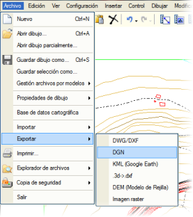
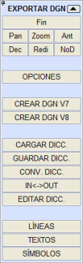
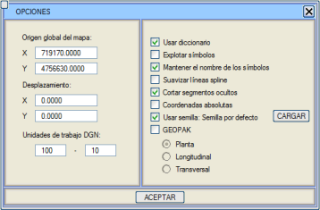
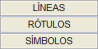
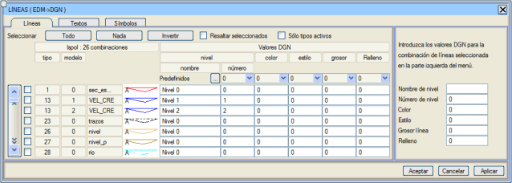
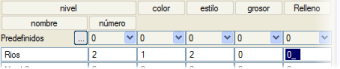
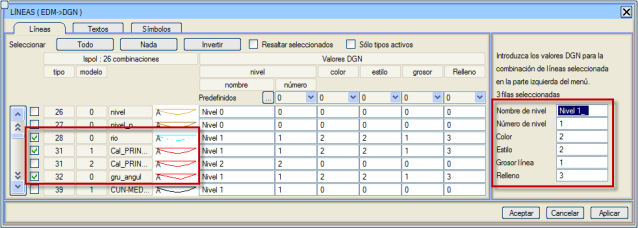

| |
|
.dgn DOSYALARINI DIŞA AKTARMA
|
Genel Bilgiler .dgn formatındaki dosyalara dışa aktarma, Dosya → Dışa Aktar → DGN seçeneği aracılığıyla yapılır. Uygulama, hem sürüm 7 hem de sürüm 8'deki dosyaları dışa aktarmaya izin verir. 
Bu seçenek seçildikten sonra, .dgn formatına dışa aktarırken gereken her şeyi yönetmeyi sağlayan menü görüntülenir. [BİTİR] düğmesi, içe aktarmayı sonlandırmak için kullanılır ve üzerine tıklandığında menü kapanır. [Pan], [Yakınlaş], [Önceki], [Detaylı], [Yeniden Çiz] ve [Basit] düğmeleri, ISTRAM®/ISPOL®'ün diğer menülerindekiyle aynı işlevselliğe sahiptir. [SEÇENEKLER] düğmesine tıklandığında, dışa aktarılmak istenen .dgn dosyasını işlerken temel ayarları gösteren bir yüzer menü açılır. 
Bu seçenekler şunlardır:
Tüm seçenekler tanımlandıktan sonra, değişiklikleri uygulamak ve seçenekler kutusunu kapatmak için [TAMAM] düğmesine basılır. EDM – DGN Dönüşüm İlişkilerinin Tanımlanması Çıktı .dgn dosyasındaki bilgileri organize etmek önemlidir, bu nedenle her objenin o dosyada sahip olacağı özellikleri belirtme imkanına sahip olmak gerekir. İçe aktarma (tersi durum) durumunda olduğu gibi, bu manuel olarak veya sözlükler kullanılarak otomatik olarak yapılabilir. Her objenin çıktı .dgn dosyasında sahip olacağı özellikleri manuel olarak belirtmek için, yan menüde bulunan düğmeler aracılığıyla erişilen sözlük düzenleme diyalogları kullanılmalıdır. 
Her veri satırı bir EDM kaynağına (tip ve model) ve buna karşılık gelen hedef DGN kombinasyonuna (seviye, renk, stil, kalınlık, dolgu gibi DGN özellikleri'nden oluşur) karşılık gelir. Varsayılan olarak, her DGN kombinasyonuna seviye adı olarak Seviye # ve seviye numarası olarak # atanır, burada # EDM model numarasıdır. Bir satıra tıklandığında, EDM kaynağı çizimde bulunanlar arasından seçili olarak görünür. Ayrıca, her bir kombinasyonun solundaki kutucuğu işaretleyerek de EDM kaynakları seçilebilir. Diğer seçim seçenekleri şunlardır:
ISTRAM®/ISPOL® çizgi tiplerini ve modellerini bu iletişim kutusu aracılığıyla dosya dönüşümü sırasında oluşturulan çizgilere atamak için iki olası yol vardır:


Her durumda, eğer belirlenen ilişkilerden memnun değilseniz, [İptal] düğmesine basarak önceki dönüşüm verilerini geri alabilirsiniz. Dönüşüm ilişkileri belirlendikten sonra, [Tamam] düğmesine tıklanır ve değişiklikler kaydedilirken iletişim kutusu kapanır. Diyalogdan çıkmak istemiyorsanız, [Uygula] düğmesine basarak yapılan değişikliklerin kaybolma riski kalmaz ve diyalog gösterilmeye devam eder. Sembollerin ve metinlerin dönüştürülmesi için izlenecek süreç, çizgiler için kullanılanla aynıdır, ancak bu durumlarda düğmeler [METİNLER] ve [SEMBOLLER]'dir ve semboller durumunda, her satırın sonundaki bir kutucuk, onları patlatma seçeneği sunar (bu özellik sadece .dgn sürüm 8 dosyaları için mevcuttur). Bu özellik sadece DGN V8 dosyaları için mevcuttur. Son olarak, [DGN V7 OLUŞTUR] ve [DGN V8 OLUŞTUR] düğmeleri, sırasıyla sürüm 7 veya 8 formatında .dgn dosyasının oluşturulmasını başlatır. Sözlükler .dgn'e dışa aktarma sözlüklerinin kullanımı, bir .dgn'nin içe aktarılmasındaki sözlüklerin kullanımına benzer. |